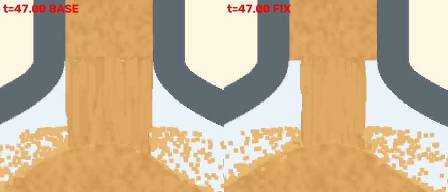
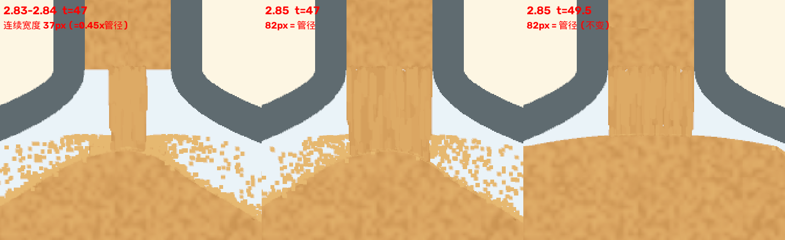
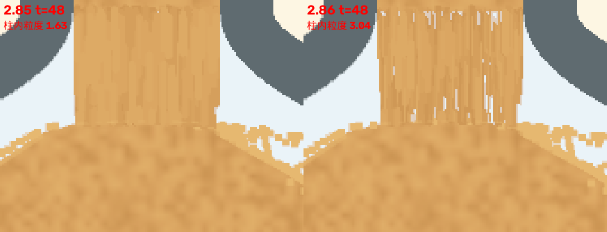

旧版本的反例与对照
旧验收页中存在先后结论冲突，例如衔接缝是否同时出现在 1.244。这里只保留错误类型和来源，不根据这些冲突资料重新认定通过。标注数字属于旧尺度与旧口径。
2.76 / 2.78：衔接横缝与沙柱断段


2.83：末段沙柱的纯色化

2.85：后期不能越来越细

当前对应 NS01 / S01，必须把内孔、出生带和实际笔画外缘分别看。原始版本记录
2.86 / 2.87：保留颗粒，出生带不越孔


2.88 至 2.94：动态图案与粒子密度
原页面自带当时图片，直接链接原稿，不重新制造“某版通过”的结论：
- 2.88 上球刷新记录：后续记录称其诊断被推翻，不能复用原结论。
- 2.91 上球材质对照：对应 U02，动态不能只靠静态哈希判。
- 2.92 沙柱密度记录：对应 S03，不许减粒子换帧率。
- 2.93 / 2.94 沙柱断裂记录：对应 S01、S02、SL01。